기계가공기능장 (2010-07-11 기출문제)
1과목: 임의 구분
1. 다음 그림이 의미하는 공유압 회로의 명칭은?
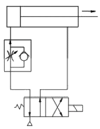
- 미터 인 회로
- 미터 아웃 회로
- 블리드 오프 회로
- OR 회로
(정답률: 72%)

2. 유압 기술의 일반적인 장점 및 단점의 설명으로 옳은 것은?
- 압력에 대한 출력의 응답이 느리다.
- 무단 변속이 불가능하다.
- 소형 장치로 큰 출력을 얻을 수 있다.
- 먼지나 이물질에 의한 고장의 우려가 없다.
(정답률: 알수없음)
3. 공기압 실린더와 결합하고, 그 운동을 규제하는 액체를 봉합한 실린더로, 폐회로를 구성하는 고나로 및 스로틀 밸브 등을 포함하는 것을 무엇이라 하나?
- 하이드로 체커
- 박형 실린더
- 포지셔너
- 프리마운트 실런더
(정답률: 45%)
4. 유압펌프를 처음으로 시동할 경우 유의 사항으로 거리가 먼 것은?
- 차가운 펌프에 뜨거운 작동유를 사용하여 시동해서는 안 된다.
- 릴리프 밸브의 조정 나사의 위치를 바꾸지 않고 운전해본 다음 릴리프 밸브를 사용하여 최저압력으로 설정하고 유압장치의 상태를 조사한다.
- 시동 전에 회전상태를 검사하여 플렉시를 캠링의 회전 방향과 설치위치를 정확히 해 둔다. 그리고 필요한 곳에 주유되어 있는가를 확인한다.
- 신품인 베인 펌프는 압력을 걸어 시동하고 최초 5분 정도는 간헐적으로 작동시켜 길들어야 한다.
(정답률: 37%)
5. 회로 내의 압력을 설정 값으로 유지하기 위해서 유체의 일부 또는 전부를 흐르게 하는 압력 제어 밸브는?
- 급속 배기 밸브
- 셔틀 밸브
- 릴리프 밸브
- 스로틀 밸브
(정답률: 44%)
6. 다음 중 피드백 제어에서 반드시 필요한 장치는?
- 과도 응답을 개선하는 장치
- 응답속도를 빠르게 하는 장치
- 안정도를 좋게 하는 장치
- 입력과 출력을 비교하는 장치
(정답률: 70%)
7. 다음 그림과 같은 기호 중에서 검출 스위치에 속하지 않는 것은?
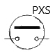


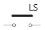
(정답률: 73%)
8. 물의 수위 경보 및 제어를 위하여 필요한 센서로서 적합하지 않은 것은?
- 플로트 스위치
- 셀렉터 스위치
- 수위감지 전극
- Level Pressure 스위치
(정답률: 34%)
9. 복수의 NC 공작기계가 가변루트인 자동반송시스템으로 연결되어 유기적으로 제어되는 생산 형태는?
- Job-shop
- FMC
- FMS
- FTL
(정답률: 알수없음)
10. 미리 정해 놓은 시간적 순서에 따라 작업을 순차 제어하는 방식을 시퀀스제어라 하는데, 다음 중 시퀀스제어를 이용하지 않는 것은?
- 자동세탁기
- 자동판매기
- 교통신호기
- 인공지능 로봇
(정답률: 70%)
11. ø10mm인 드릴로 두께 10mm인 강판에 구멍을 가공하고자 할 때 필요한 절삭시간은 몇 초인가? (단, 드릴의 이송속도는 0.5mm/s이고, 드릴의 원추 높이는 3mm 이다.)
- 20
- 26
- 2
- 2.5
(정답률: 39%)
12. 절삭속도 60m/min, 절삭력이 9.81kN 일 때의 필요한 절삭동력을 몇 kW 인가? (단, 효율 η = 0.85로 한다.)
- 11.54
- 15.68
- 94.1
- 69.2
(정답률: 알수없음)
13. 공작기계 주철 베드의 표면을 경화시키는데 다음 중 가장 효과적인 방법은?
- 염욕법
- 오스템퍼링
- 고주파 정화 처리법
- 머플로법
(정답률: 알수없음)
14. 선반에서 노즈 반지름이 0.2mm인 바이트를 사용하여 Hmax = 6.3μm 의 이론적 표면거칠기를 얻으려면 이송을 약 얼마로 하여야 하는가?
- 0.1 mm/rev
- 0.2 mm/rev
- 0.3 mm/rev
- 0.4 mm/rev
(정답률: 55%)
15. 액체호닝의 작업 특성을 설명한 것으로 다음 중 맞지 않는 것은?
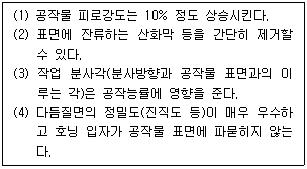
- (3)
- (1), (2)
- (4)
- 전부 해당 없음
(정답률: 70%)
16. 절삭 공구로 절삭 가공을 할 때 고온과 고압으로 인한 마찰력으로 공구가 마모되어 일어나는 현상으로 옳은 것은?
- 절삭성이 좋아진다.
- 가공 치수의 정밀도가 높아진다.
- 가공된 면의 표면거칠기가 양호하게 된다.
- 소요되는 절삭동력이 증가된다.
(정답률: 알수없음)
17. 건식래핑의 속도로 가장 적합한 것은?
- 5~10m/min
- 20~30m/min
- 50~80m/min
- 100~120m/min
(정답률: 47%)
18. 연삭작업에서 연삭조건이 좋더라도 숫돌바퀴의 칩이 균일치 못하거나 공작물의 영향을 받아 숫돌 모양이 나쁠 때 일정한 모양으로 고치는 방법은?
- 로딩
- 글레이징
- 트라잉
- 트루잉
(정답률: 알수없음)
19. 절삭 중에 발생되는 칩의 형상 중에 공구마모인 크레이터가 가장 뚜렷하게 발생되는 칩의 형태는?
- 유동형
- 전단형
- 균열형
- 열단형
(정답률: 47%)
20. 판 캠을 밀링머신에서 절삭할 때 가장 효과적인 커터는?
- 엔드밀
- 메탈 소
- 플라이 커터
- 페이스 커터
(정답률: 50%)
2과목: 임의 구분
21. 선반의 주축을 중공축으로 한 이유로 볼 수 없는 것은?
- 굽힘과 비틀림 응력의 강화
- 중량감소와 베어링에 걸리는 하중을 감소
- 긴 공작물을 쉽게 고정
- 용이한 칩 배출
(정답률: 47%)
22. 절삭공구의 구비조건으로 거리가 먼 것은?
- 가격이 저렴할 것
- 인성과 내마모성이 클 것
- 고온에서 경도가 감소될 것
- 공구의 제작이 쉬울 것
(정답률: 70%)
23. 절삭유의 사용목적으로 틀린 것은?
- 공구의 인선을 냉각시켜 공구의 경도 저하을 방지
- 공작물을 냉각시켜 절삭열에 의한 정밀도 저하를 방지
- 칩의 냉각을 도와 공작물의 마찰계수를 증가
- 칩을 씻어주어서 절삭작용을 쉽게 함
(정답률: 82%)
24. 가는 금속선을 전극으로 하여 2차원 형상으로 공작물을 잘라내는 가공법은?
- 플라즈마 가공
- 와이어 컷 방전 가공
- 초음파 가공
- 전해 연마 가공
(정답률: 84%)
25. 입도가 작은 숫돌로 밀강에 작은 압력으로 가압하면서, 가공물에 이송을 주고, 동시에 숫돌에 진동을 주어 변질층의 표명니나 원통 내면을 다듬질하는 가공법은?
- 슈퍼 피니싱
- 래핑
- 액체 호닝
- 버핑
(정답률: 75%)
26. 화학가공의 특징을 잘못 설명한 것은?
- 가공물의 강도와 경도에 관계없이 가공할 수 있다.
- 가공경화 또는 표면 변질층이 발생하지 않는다.
- 한번에 여러 개를 가공할 수 있다.
- 친환경적인 작업방법이다.
(정답률: 75%)
27. 초음파 가공에 대한 설명으로 옳은 것은?
- 취성이 큰 재질은 가공할 수 없다.
- 부도체의 재질을 가공할 수 없다.
- 초음파 가공에는 다이아몬드 공구를 주로 사용한다.
- 연삭입자의 재질은 산화알루미늄계, 탄화수소계 등이 주로 사용된다.
(정답률: 55%)
28. 공작기계에서 절삭속도에 대한 설명 중 틀린 것은?
- 절삭속도는 가공물의 재질 및 지름, 절삭공구의 재질에 따라 적절히 선정하여야 한다.
- 절삭속도가 증가하면 가공물의 표면 거칠기가 나빠진다.
- 절삭속도가 증가하면 절삭공구와 가공물의 마찰력 증가로 절삭 공구 수명이 단축 된다.
- 동일한 회전수에서 가공물 지름이 커질수록 절삭속도는 커지고, 지름이 작아지면 느려진다.
(정답률: 75%)
29. 센터리스 연삭기의 장점에 해당되지 않는 것은?
- 센터가 필요하지 않아 센터 구멍을 가공할 필요가 없다.
- 긴 축 재료의 연삭이 가능하다.
- 긴 홈이 있는 가공물의 연삭에 적합하다.
- 연삭 여유가 적어도 된다.
(정답률: 70%)
30. 밀링머신에서 단식 분할법으로 원주를
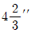
씩 등분하려면 다음 어느 방법이 적당한가?- 18개 구멍자리에서 4구멍씩 회전
- 18개 구멍자리에서 14구멍씩 회전
- 27개 구멍자리에서 4구멍씩 회전
- 27개 구멍자리에서 14구멍씩 회전
(정답률: 36%)
31. 구성인선의 방지 대책에 해당하지 않는 것은?
- 바이트의 경사각을 크게 한다.
- 윤활성이 좋은 절삭유제를 사용한다.
- 저속절삭을 한다.
- 마찰계수가 작은 절삭공구를 사용한다.
(정답률: 80%)
32. 공작기계에 관한 시험 항목 중 다음 설명이 나타내는 것은?
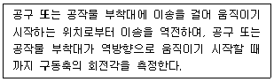
- 백래시 시험
- 무부하운전 시험
- 강성 시험
- 부하운전 시험
(정답률: 알수없음)
33. 암모니아 가스에 의한 표면 경화법은?
- 액체 침탄법
- 침탄법
- 숏 피닝법
- 질화법
(정답률: 알수없음)
34. 표점거리 50mm인 인장시험편을 인장 시험한 결과 표점거리가 52.5mm가 되었다. 이 시험편의 연신율은?
- 2.5%
- 5%
- 7.5%
- 25%
(정답률: 73%)
35. 보통주철에 대한 설명으로 틀린 것은?
- 조직은 펄라이트 기지 조직이다.
- 통상 C, Si, P를 함유하고 있다.
- 고온에서 기계적 성질이 좋지 않다.
- 주조가 쉽고 값이 저렴하다.
(정답률: 15%)
36. 프레스용 금형재료의 구비조건 중 옳지 않은 것은?
- 인성이 클 것
- 내마모성이 클 것
- 열처리 시 치수변화가 많을 것
- 기계가공성이 좋을 것
(정답률: 70%)
37. 황동 및 황동 합금의 종류가 아닌 것은?
- 하스텔로이
- 문쯔 메탈
- 길딩 메탈
- 톰백
(정답률: 50%)
38. 기계구조용 탄소강의 SM45C에서 기호표시 중 “45”는 무엇을 뜻하는가?
- 탄소함유량
- 항복점
- 경도
- 인장강도
(정답률: 84%)
39. 고온강도가 크므로 내연기관의 실린더, 피스톤 등에 이용되는 내열용 Al 합금은?
- Y합금
- 오일라이트
- 러지메탈
- 켈멧
(정답률: 알수없음)
40. 한계 게이지의 마모 여유는 일반적으로 어느 쪽에 주는가?
- 정지측에 준다.
- 통과측에 준다.
- 양쪽에 다 준다.
- 양쪽에 모두 주지 않는다.
(정답률: 87%)
3과목: 임의 구분
41. 투영기의 교정과 관리에서 배출교정을 위한 배율 오차를 구하는 시긍로 옳은 것은? (단, △M : 배율오차, M : 실축한 배율, Mo : 호칭배율)
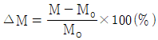
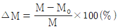
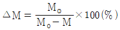
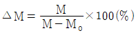
(정답률: 54%)
42. 도면에서 더브테일의 각도 나비 D1을 측정하고자 할 때 그 식으로 맞는 것은?
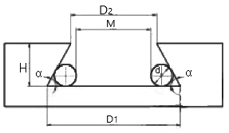
- D1 = M+d(1+sinα/2)
- D1 = M+d(1+tan-1α/2)
- D1 = M+d(1+sin-1α/2)
- D1 = M+d(1+tanα/2)
(정답률: 34%)
43. 다음 중 KS 규격에 따른 스퍼기어 및 헬리컬 기어의 측정 요소에 해당하지 않는 것은?
- 피치
- 잇줄
- 이형
- 유효지름
(정답률: 55%)
44. 다음 중 표면 거칠기 측정기가 옳게 나열된 것은?
- 삼선식, 촉침식
- 촉침식, 광파 간섭식
- 광파 간섭식, 스키드식
- 정적 검출식, 촉침식
(정답률: 86%)
45. 지그의 손익분기점(N)의 계산식으로 옳은 것은? (단, Y : 지그 제작비용, y : 1시간당 가공비용, H : 지그를 사용하지 않을 때 1개당 가공 시간, HJ : 지그를 사용할 때 1개당 가공 시간)
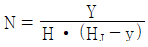
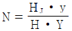
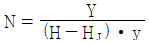
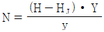
(정답률: 46%)
46. 작은 하중이 걸리는 작업은 주로 스프링에 의한 링크에 의해 작동되며 4가지(하양 잠김형, 압착형, 당기기형, 직선 이동형) 기본적인 클램핑 작용으로 되어 있는 클램프는?
- 스트랩 클램프
- 토글 클램프
- 쐐기형 클램프
- 캠 클램프
(정답률: 60%)
47. 절삭공구를 직접 안내하는 것이 아니라 타 부시를 설치하기 위하여 지그 몸체에 압입되어 고정하는 부시는?
- 고정 부시
- 삽입 부시
- 라이너 부시
- 널링 부시
(정답률: 46%)
48. 한계 게이지 재료에 요구되는 성질로 틀린 것은?
- 열팽창 계수가 클 것
- 내마모성이 좋을 것
- 변형이 적을 것
- 정밀 다듬질이 가능할 것
(정답률: 알수없음)
49. 편측공차
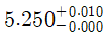
을 동등양측공차로 옳게 변환한 것은?- 5.255±0.0⑤
- 5.255±0.010
- 5.260±0.0⑤
- 5.260±0.010
(정답률: 88%)
50. 다음 그림과 같이 A점에서 화살표방향으로 가공을 한다. ①의 프로그램 내용으로 올바른 것은?
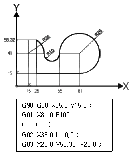
- G02 X-26.0 Y26.0 R-26.0 ;
- G02 X-26.0 Y26.0 J26.0 ;
- G03 X55.0 Y41.0 J26.0 ;
- G03 X55.0 Y41.0 R-26.0 ;
(정답률: 43%)
51. 다음은 2D 모델링 및 NC DATA 생성과정으로 순서가 바른 것은?
- 도면 → 곡선의 정의 → CL Data 생성 → 공구경로검증 → 후처리 → NC Data 생성
- 도면 → 후처리 → 공구경로검증 → CL Data 생성 → 곡선의 정의 → NC Data 생성
- 도면 → 곡선의 정의 → NC Data 생성 → 후처리 → 공구경로검증 → CL Data 생성
- 도면 → 곡선의 정의 → 후처리 → NC Data 생성 → 공구경로검증 → CL Data 생성
(정답률: 70%)
52. 다음 중 입력된 전기적인 펄스 신호에 따라 일정한 각도만 회전하는 모터는?
- 스테핑 모터
- 브러쉬 리스 모터
- 공압 모터
- 유압 모터
(정답률: 73%)
53. CNC 선반프로그래밍에서 절삭이송 속도를 회전당 공구의 이송량으로 지정할 때 사용하는 G코드는?
- G96
- G97
- G98
- G99
(정답률: 알수없음)
54. Surface Modeling의 특징과 거리가 먼 것은?
- 2개의 교차면의 교선을 구할 수 있다.
- NC data를 생성할 수 있다.
- 은선 제거가 어렵다.
- 복잡한 형상을 표현할 수가 있다.
(정답률: 59%)
55. 관리 속도에서 점이 관리한계 내에 있으나 중심선 한쪽에 연속해서 나타나는 점의 배열 현상을 무엇이라 하는가?
- 연
- 경향
- 산포
- 주기
(정답률: 알수없음)
56. 로트의 크기 30, 부적합품률이 10%인 로트에서 시료의 크기를 5로 하여 랜덤 샘플링할 때, 시료 중 부적합품수가 1개 이상일 확률은 약 얼마인가? (단, 초기하분포를 이용하여 계산한다.)
- 0.3695
- 0.4335
- 0.5665
- 0.63⑤
(정답률: 31%)
57. 다음 중 브레인스토밍과 가장 관계가 깊은 것은?
- 파레토도
- 히스토그램
- 회귀분석
- 특성요인도
(정답률: 64%)
58. 작업개선을 위한 공정분석에 포함되지 않는 것은?
- 제품 공정분석
- 사무 공정분석
- 직장 공정분석
- 작업자 공정분석
(정답률: 47%)
59. 로트의 크기가 시료의 크기에 비해 10배 이상 클 때, 시료의 크기와 합격판정계수를 일정하게 하고, 로트의 크기를 증가시키면 검사특성곡선의 모양 변화에 대한 설명으로 가장 적절한 것은?
- 무한대로 커진다.
- 거의 변화하지 않는다.
- 검사특성곡선의 기울기가 완만해진다.
- 경사특성곡선의 기울기 경사가 급해진다.
(정답률: 65%)
60. 과거의 자료를 수리적으로 분석하여 일정한 경향을 도출한 후 가까운 장래의 매출액, 생산량 등을 예측하는 방법으로 무엇이라 하는가?
- 델파이법
- 전문가 패널법
- 시장조사법
- 시계열분석법
(정답률: 55%)
이 회로는 유압 실린더의 이동거리를 측정하기 위해 사용되는 회로로, 유압 실린더의 피스턴 측면에 미터 인(Meter In)이라는 유압 기기를 설치하여 유압 유량을 측정합니다. 이 회로는 유압 실린더의 이동거리를 정확하게 측정할 수 있어 자동화 시스템 등에서 많이 사용됩니다.